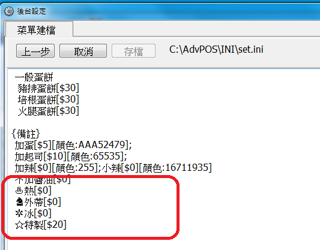
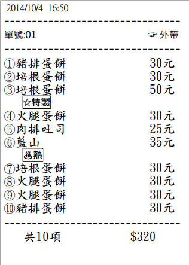
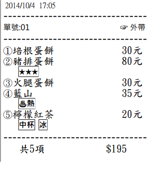

有些備註選項 可能需要加強辨識
可採用一些ASCII 的符號作為備註



注意:
少量的圖示 可以達到提醒的效果 太多反而會有反效果
以下提供Ascii 圖碼 可直接複製 貼上使用 請參考
๑•ิ.•ั๑ ๑۩۞۩๑ ♬✿.｡.:* ★ ☆ εїз℡❣·۰•●○●ōゃ ♥ ♡๑۩ﺴ ☜ ☞ ☎ ☏♡ ⊙◎ ☺ ☻✖╄ஐﻬ ► ◄ ▧ ▨ ♨ ◐ ◑ ↔ ↕ ▪ ▫ ☼ ♦ ▀ ▄ █▌ ▐░ ▒ ▬♦ ◊ ◦ ☼ ♠♣ ▣ ▤ ▥ ▦ ▩ ◘ ◙ ◈ ♫ ♬ ♪ ♩ ♭ ♪ の ☆ → あ ぃ ￡ ❤＃ ＠ ＆ ＊ ❁ ❀ ✿ ✾ ❃ ✺ ❇ ❈ ❊ ❉ ✱ ✲ ✩ ✫ ✬ ✭ ✮ ✰ ☆ ★ ✪ ¤ ☼ ☀ ☽ ☾ ❤ ♡ ღ☻ ☺ ❂ ◕ ⊕ ☉ Θ o O ♋ ☯ ㊝ ⊙ ◎◑ ◐ ۰ • ● ▪ ▫ ｡ ﾟ ๑ ☜ ☞ ☂ ♨ ☎ ☏ × ÷ ＝ ≠ ≒ ∞ ˇ ± √ ⊥▶ ▷ ◀ ◁ ☀ ☁ ☂ ☃ ☄ ★ ☆ ☇ ☈ ☉ ☊ ☋ ☌ ☍ ☑ ☒☢ ☸ ☹ ☺ ☻ ☼ ☽ ☾ ♠ ♡ ♢ ♣ ♤ ♥ ♦ ♧ ♨ ♩ ✙ ✈ ✉ ✌ ✁♝ ♞♯♩♪♫♬♭♮ ☎ ☏ ☪ ♈ ♨ ₪ ™ ♂✿ ♥ の ↑ ↓ ← → ↖ ↗ ↙ ↘ ㊣ ◎ ○ ● ⊕ ⊙ ○ △ ▲ ☆ ★ ◇ ◆ ■ □ ▽ ▼ § ￥ 〒 ￠ ￡ ※ ♀ ♂ &⁂ ℡ ↂ░ ▣ ▤ ▥ ▦ ▧ ✐✌✍✡✓✔✕✖ ♂ ♀ ♥ ♡ ☜ ☞ ☎ ☏ ⊙ ◎ ☺ ☻ ► ◄ ▧ ▨ ♨ ◐ ◑ ↔ ↕ ♥ ♡ ▪ ▫ ☼ ♦ ▀ ▄ █ ▌ ▐ ░ ▒ ▬ ♦ ◊ ◘ ◙ ◦ ☼ ♠ ♣ ▣ ▤ ▥ ▦ ▩ ◘ ◙ ◈ ♫ ♬ ♪ ♩ ♭ ♪ ✄☪☣☢☠░ ▒ ▬ ♦ ◊ ◦ ♠ ♣ ▣ ۰•● ❤ ●•۰► ◄ ▧ ▨ ♨ ◐ ◑ ↔ ↕ ▪ ▫ ☼ ♦♧♡♂♀♠♣♥❤☜☞☎☏⊙◎ ☺☻☼▧▨♨◐◑↔↕▪ ▒ ◊◦▣▤▥ ▦▩◘ ◈◇♬♪♩♭♪の★☆→あぃ￡Ю〓§♤♥▶¤๑⊹⊱⋛⋌⋚⊰⊹ ๑۩۩.. ..۩۩๑ ๑۩۞۩๑ ✲ ❈ ✿ ✲ ❈ ➹ ~.~ ◕‿- ❣ ✚ ✪ ✣ ✤ ✥ ✦❉ ❥ ❦ ❧ ❃ ❂ ❁ ❀ ✄ ☪ ☣ ☢ ☠ ☭ღღღ ▶ ▷ ◀ ◁ ☀ ☁ ☂ ☃ ☄ ★ ☆ ☇ ☈ ⊙ ☊ ☋ ☌ ☍ⓛⓞⓥⓔ๑•ิ.•ั๑ ๑۩۞۩๑ ♬✿ ☉♡ ♢ ♣ ♤ ♥ ♦ ♧ ♨ ♩ ✙✈ ✉ ✌ ✁ ✎ ✐ ❀ ✰ ❁ ❤ ❥ ❦❧ ➳ ➽ εїз℡❣·۰•●○●ゃōゃ♥ ♡๑۩ﺴ ☜ ☞ ☎ ☏♡ ⊙◎ ☺ ☻✖╄ஐﻬ ► ◄ ▧ ▨ ♨ ◐ ◑ ↔ ↕ ▪ ▫ ☼ ♦ ▀ ▄ █▌ ▐░ ▒ ▬♦ ◊ ◦ ☼ ♠♣ ▣ ▤ ▥ ▦ ▩ ◘ ◙ ◈ ♫ ♬ ♪ ♩ ♭ ♪ の ☆ → あ ぃ ￡ ❤ ❁ ❀ ✿ ✾ ❃ ✺ ❇ ❈ ❊ ❉ ✱ ✲ ✩ ✫ ✬ ✭ ✮ ✰ ☆ ★ ✪ ¤ ☼ ☀ ☽ ☾ ❤ ♡ ღ☻ ☺ ❂ ◕ ⊕ ☉ Θ o O ♋ ☯ ㊝ ⊙ ◎ ◑ ◐ ۰ • ● ▪ ▫ ｡ ﾟ ๑ ☜ ☞ ☂ ♨ ☎ ☏▶ ▷ ◀ ◁ ☀ ☁ ☂ ☃ ☄ ★ ☆ ☇ ☈ ☉ ☊ ☋ ☌ ☍ ☑ ☒☢ ☸ ☹ ☺ ☻ ☼ ☽ ☾ ♠ ♝ ♞♯♩♪♫♬♭♮ ☎ ☏ ☪ ♈ ♨ ºº ₪ ¤ 큐 « »™ ♂✿ ♥ の ↑ ↓ ← → ↖ ↗ ↙ ↘ ㊣ ◎ ○ ● ⊕ ⊙ ○ △ ▲ ☆ ★ ◇ ◆ ■ □ ▽ ▼ § ￥〒 ￠ ￡ ※ ♀ ♂ © ® ⁂ ℡ ↂ░ ▣ ▤ ▥ ▦ ▧ ✐✌✍✡✓✔✕✖ ♂ ♀ ♥ ♡ ☜ ☞ ☎ ☏ ⊙ ◎ ☺ ☻ ► ◄ ▧ ▨ ♨ ◐ ◑ ↔ ↕ ♥ ♡ ▪ ▫ ☼ ♦ ▀ ▄ █ ▌ ▐ ░ ▒ ▬ ♦ ◊ ◘ ◙ ◦ ☼ ♠ ♣ ▣ ▤ ▥ ▦ ▩ ◘ ◙ ◈ ♫ ♬ ♪ ♩ ♭ ♪ ✄☪☣☢☠㊊㊋㊌㊍㊎㊏ ㊐㊑㊒㊓㊔㊕㊖㊗㊘㊜㊝㊞㊟㊠㊡㊢ ㊣㊤㊥㊦㊧㊨㊩㊪㊫㊬㊭㊮㊯㊰✗✘✚✪✣✤✥✦✧✩✫✬✭✮✯✰ ✱✲✳❃❂❁❀✿✾✽✼✻✺✹✸✷ ✶✵✴❄❅❆❇❈❉❊❋❖☀☂☁【】┱ ┲ ❣ ✪ ✣ ✤ ✥ ✦ ❉ ❥ ❦ ❧ ❃ ❂ ❁ ❀ ✄ ☪ ☣ ☢ ☠ ☭ ♈ ➸ ✓ ✔ ✕ ✖ .: ◢ ◣ ◥ ◤ ▽ ▧ ▨ ▣ ▤ ▥ ▦ ▩ ◘ ◙ ▓ ▒ ░ ™ ℡ 凸 の ๑۞๑ ๑۩ﺴ ﺴ۩๑ o(‧”’‧)o ❆ べò⊹⊱⋛⋋ ⋌⋚⊰⊹ ⓛⓞⓥⓔ ☀ ☼ ☜ ☞ ⊙® ◈ ♦ ◊ ◦ ◇ ◆ εїз❃❂❁❀✿✾✽✼✻✺✹✸✷ ✶✵✴❄❅❆❇❈❉ ❊❋❖❤❥❦❧↔ ↕ ▪ → ︷╅╊✿ (¯`•._.• •._.•´¯)(¯`•¸•´¯) ❤`•.¸¸.•´´¯`•• .¸¸.•´¯`•.•●•۰• ••.•´¯`•.•• ••.•´¯`•.••—¤÷(`[¤* *¤]´)÷¤——(•·÷[ ]÷·•)— ①②③④⑤⑥⑦⑧⑨⑩ ⑪⑫⑬⑭⑮⑯⑰⑱⑲⑳ ⒶⒷⒸⒹⒺⒻ ⒼⒽⒾⒿⓀⓁ ⓂⓃⓄⓅⓆⓇ ⓈⓉⓊⓋⓌⓍ ⓎⓏ ⓐⓑⓒⓓⓔⓕ ⓖⓗⓘⓙⓚⓛ ⓜⓝⓞⓟⓠⓡ ⓢⓣⓤⓥⓦⓧ ⓨⓩ(⊙▂⊙✖ )(づ ￣ ³￣)づ ( c//”-}{-*\x)(-’๏_๏’-)(◐ o ◑ )(⊙…⊙ )๏[-ิ_•ิ]๏(•ิ_•ิ)(•ิ_•ิ) (/•ิ_•ิ)(︶︹︺)